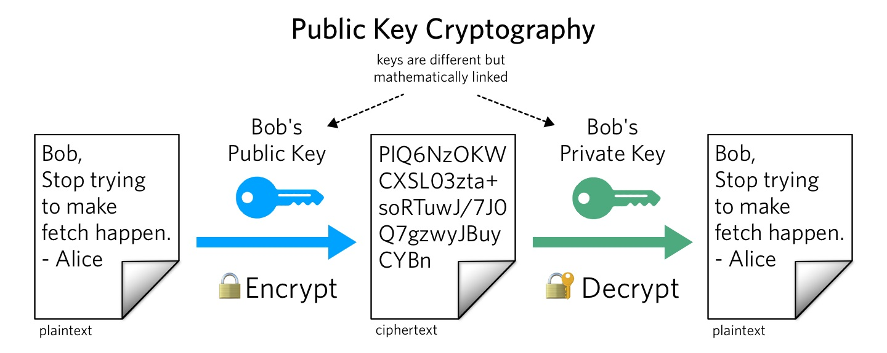

Modern cryptography concerns itself with the following four objectives:
Confidentiality: the information cannot be understood by anyone for whom it was unintended
Integrity: the information cannot be altered in storage or transit between sender and intended receiver without the alteration being detected
Non-repudiation: the creator/sender of the information cannot deny at a later stage his or her intentions in the creation or transmission of the information
Authentication: the sender and receiver can confirm each other's identity and the origin/destination of the information
Procedures and protocols that meet some or all of the above criteria are known as cryptosystems. Cryptosystems are often thought to refer only to mathematical procedures and computer programs; however, they also include the regulation of human behavior, such as choosing hard-to-guess passwords, logging off unused systems, and not discussing sensitive procedures with outsiders.
CRYPTOGRAPHY:
